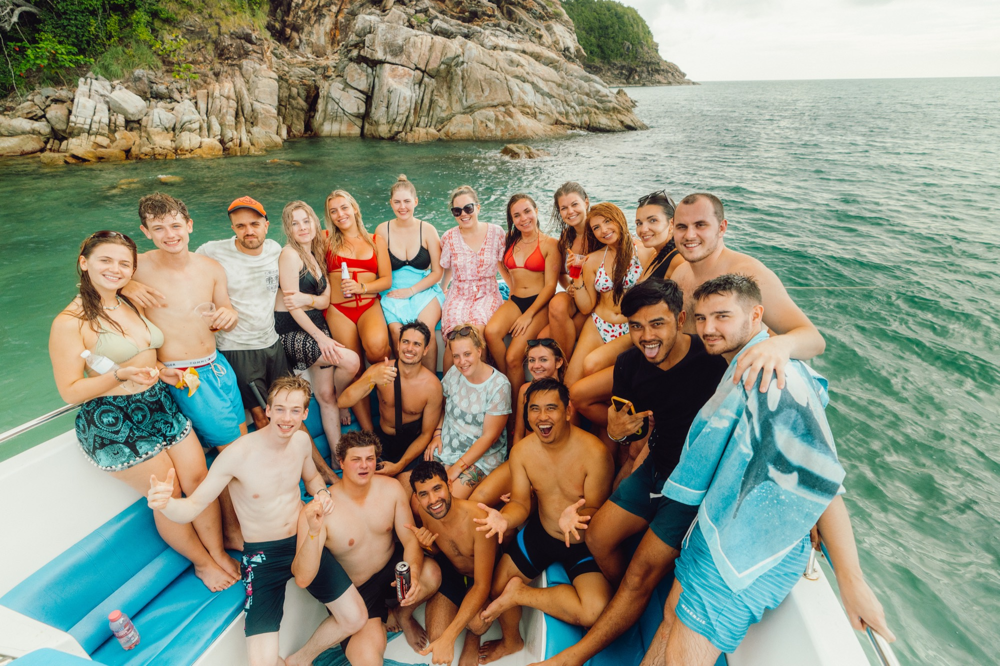

Cross-links — demo
More About Us
The Rest Of
The Story
Our Story
How TruTravels started — straight from the founders.
Our Values
What we stand for and how we travel.
Our Impact
Local guides, Planeterra projects, real change.
Our Brand
Logo, voice, and the look of TruTravels.

The Tru Way
How we run trips, and why they feel different.